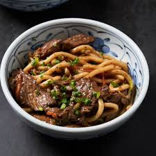

Beef Udon

Description
Beef Udon. Serves 4
Ingredients
- 300g thinly sliced beef
- 1 onion
- 2 garlic cloves chopped
- 800g udon noodles
- 2 tbsp soy sauce
- 2 spring onion
- 2 tsp cornstarch
Steps
- Boil a pot of water
- Heat oil in a wok. Stir fry onions for a few minutes. Add the beef and sear. Add the garlic and stir fry. Turn off the heat
- Boil the noodles, then add to the wok. Add the sauces and seasoning